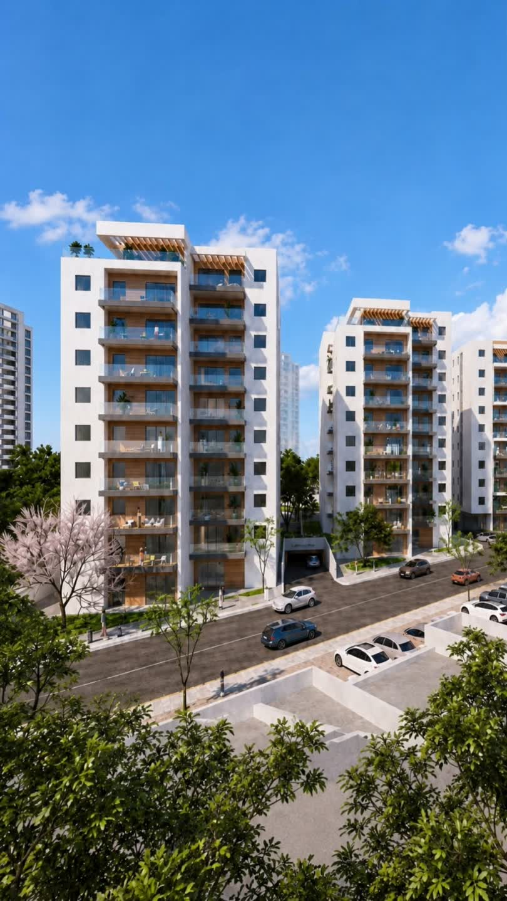
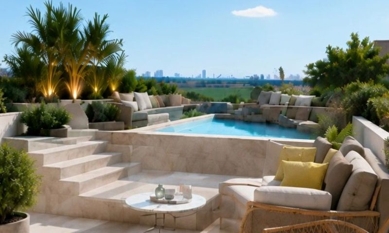
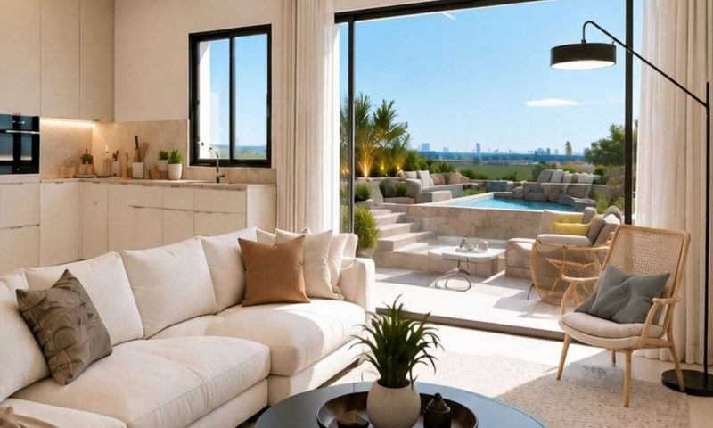

וילה פרטית מעל העיר
פנטהאוז שנבנה לחיים פתוחים באמת — מרחבי חוץ נדיבים, אור טבעי, ותחושת פרטיות שנשארת איתכם לאורך כל היום.

מרפסת רחבת ידיים שמרגישה כמו גינה פרטית — לאירוח, לשקט ולחיים תחת שמיים פתוחים.
סלון, פינת אוכל ומרפסת מתחברים לחלל אחד פתוח ומואר — הכול נפתח אל הנוף.
חלל המגורים כולו פונה החוצה — האור, הנוף והבריכה מלווים כל רגע בבית.
יש בתים יפים.
ויש בתים שמרגישים אחרת.
ALTA SKY RESIDENCE
פנטהאוז שנבנה לחיים פתוחים באמת — מרחבי חוץ נדיבים, אור טבעי, ותחושת פרטיות שנשארת איתכם לאורך כל היום.

מהבריכה והאירוח בחוץ ועד לחללים הפנימיים, כל פרט תוכנן כדי ליצור חוויית מגורים רגועה ואלגנטית.

מיקום שמאפשר ליהנות מהירוק, מהשקט ומהנגישות — בלי להתפשר על איכות החיים ובלי לוותר על קצב נכון של יום־יום.
השאירו פרטים ונחזור אליכם בהקדם